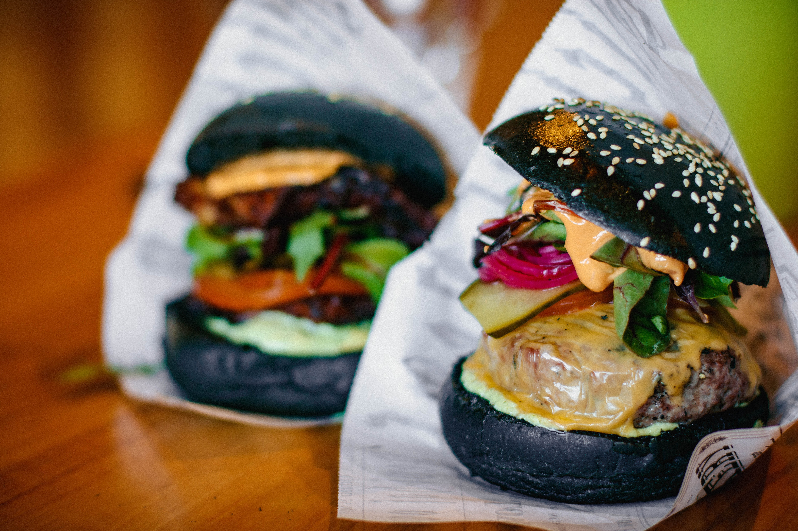

Coffee
Coffee is a brewed drink prepared from roasted coffee beans, the seeds of berries from certain Coffea
species. All fruit must be further processed from a raw material—the fruit and seed—into a stable, raw
product; un-roasted, green coffee. To process the berries, the seed is separated from the fruit to
produce green coffee. Green coffee is then roasted, a process which transforms the raw product (green
coffee) into a consumable product (roasted coffee). Roasted coffee is ground into a powder and mixed
with water to produce a cup of coffee.

Pizza
Pizza (Italian: [ˈpittsa], Neapolitan: [ˈpittsə]) is an Italian dish consisting of a usually round,
flattened base of leavened wheat-based dough topped with tomatoes, cheese, and often various other
ingredients (such as anchovies, mushrooms, onions, olives, pineapple, meat, etc.), which is then baked
at a high temperature, traditionally in a wood-fired oven.[1] A small pizza is sometimes called a
pizzetta. A person who makes pizza is known as a pizzaiolo.

Hamburger
A hamburger (also burger for short) is a food, typically considered a sandwich, consisting of one or more
cooked patties of ground meat, usually beef, placed inside a sliced bread roll or bun. The patty may be
pan fried, grilled, smoked or flame broiled. Hamburgers are often served with cheese, lettuce, tomato,
onion, pickles, bacon, or chiles; condiments such as ketchup, mustard, mayonnaise, relish, or a "special
sauce", often a variation of Thousand Island dressing; and are frequently placed on sesame seed buns. A
hamburger topped with cheese is called a cheeseburger.